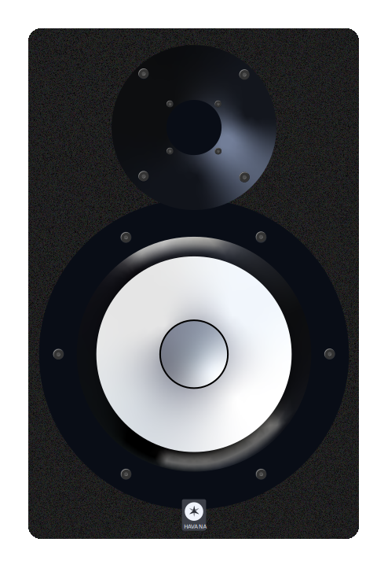

Vektörel Ve Skaler Nicelikler
Vektör
• Vektör, yönü ve büyüklüğü olan matematiksel bir nesnedir.
• Geometrik olarak temsil edildiğinde, başlangıç noktasından uç noktasına uzanan bir ok şeklinde gösterilir.
• Bu okun doğrultusu, vektörün yönünü belirtirken, uzunluğu da büyüklüğünü ifade eder.
• Vektör, x ve y bileşenlerinin birleşiminden oluşur.
• Bir vektörün yönü, pusula yönleriyle tanımlanabilir.
• Adı "\(v\)", uzunluğu "\(r\)" ve "\(\theta\) " açısıyla çizilmiş olan bir vektörün
matematiksel gösterimi aşağıdaki gibidir.
\(\vec{v} = \langle r \cdot cos(\theta), r \cdot sin(\theta) \rangle\)
! Vektörün yönü pozitif veya negatif olabilir ama büyüklüğü her zaman pozitiftir.
Bileşenleri verilmiş bir \(\vec{v}\) vektörünün büyüklüğünü ve açısını nasıl bulabileceğimize bakalım.• Vektörün büyüklüğünü bulmak için pisagor yöntemini kullanabiliriz.
Bir vektör mutlak değer içinde yer alıyorsa, bu onun büyüklüğünü ifade eder.$$ | \vec{v} | = \sqrt{3\,^2 + 4\,^2} $$ $$ | \vec{v} | = 5 $$
• Şimdi ise vektörün açısını, \(arctan\) fonksiyonunu kullanarak bulalım.
$$ \theta = arctan\left(\frac{4}{3}\right) \approx 5\,3\,.13\,^\circ $$
Gösterim
\(\vec{v} = \langle 5 \cdot cos(5\,3\,.13\,^\circ), 5 \cdot sin(5\,3\,.13\,^\circ) \rangle\)
\(\vec{v} = \langle 3\,, 4\, \rangle\)
• İki vektörün yönleri ve büyüklükleri aynı ise bu vektörler birbirine eşittir.
Aşağıdaki iki vektörün başlangıç noktaları farklı olmasına rağmen büyüklük ve yönleri aynı olduğu için eşit kabul edilir.$$ \vec{A} = \vec{B} $$
Vektörlerde Toplama Ve Çıkarma
• Pazarda sebze alırken 2 kg + 3 kg = 5 kg şeklinde basitçe toplama yapabiliriz. Ancak vektörlerde yalnızca büyüklükleri
toplayıp veya çıkararak işlem yapmak mümkün değildir; yönleri de dikkate almak gerekir.
Toplama
• Uç uca eklenen vektörleri toplamak için başlangıç noktasından bitiş noktasına bir bileşke vektör çizilir.
$$ \vec{A} + \vec{B} = \vec{C} $$
Vektör Ekle
Bileşke Vektörü Çiz
Ekranı Yinele
Çıkarma
• Bir vektörün '-' ile çarpılması, vektörün yönünün tersine dönmesi anlamına gelir.
\(\vec{A}\)
• Bu durumu kullanıp çıkarma işlemi yapacağımız zaman çıkaracağımız vektörün ters yönlüsünü alıp toplarız.
• \(\vec{A} - \vec{B}\) işlemini yaparken aslında A vektörünün ucuna B vektörünün ters yönlüsünü çizmiş oluruz.
• \(\vec{A} + (-\vec{B})\)
Vektörel Nicelikler
• Hem büyüklük hem de yön ile tanımlanan niceliklerdir.
• Bir sayı ve birimle birlikte, hangi yönde olduğu da belirtilmelidir.
• Vektörler niceliklerde toplama, çıkarma, çarpma, bölme gibi aritmetik işlemler vektör kurallarına göre yapılır.
Örnekler
• Hız \(\vec{v} \rightarrow \) 20 m/s kuzey yönünde
• Kuvvet \(\vec{F} \rightarrow \) 50N sağa doğru
• Yer Değiştirme \(\vec{d} \rightarrow \) 5 metre doğu yönünde
•
•
Kırmızı araba, 20 m/s hızla doğu yönüne ilerlerken, sarı araba ise 15 m/s hızla batıya doğru yol almaktadır.
• Hızları Toplamı? • Hızları Farkı?Hızları Toplamı
Hızları Farkı
Skaler Nicelikler
• Yalnızca büyüklük ile tanımlanan niceliklerdir.
• Yönler yoktur, sadece bir sayı ve bir birim ile ifade edilirler.
• Temel büyüklüklerin hepsi skalerdir.
Örnekler
• Uzunluk \(\rightarrow\) 2 metre
• Kütle \(\rightarrow\) 5 kilogram
• Zaman \(\rightarrow\) 10 saniye
• Hacim \(\rightarrow\) 3 litre
 Sonraki sayfa